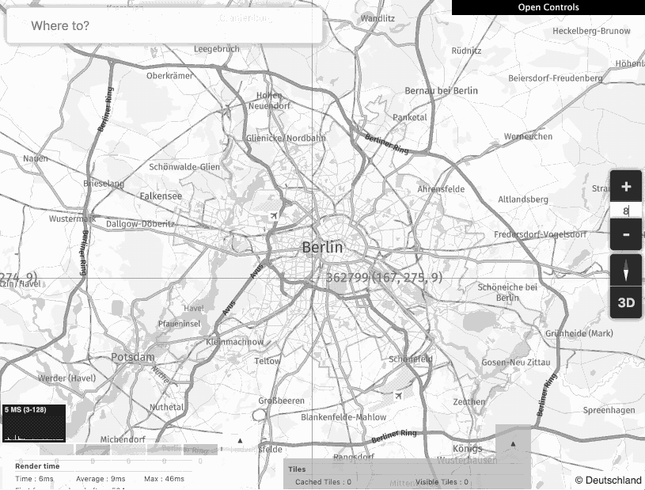
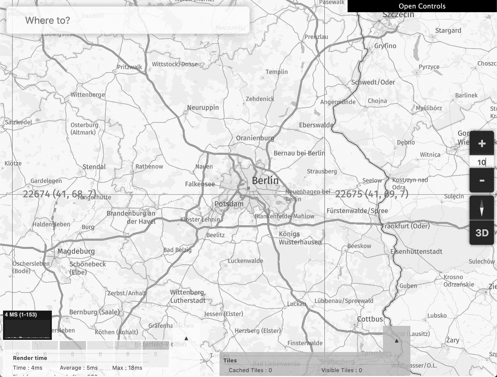
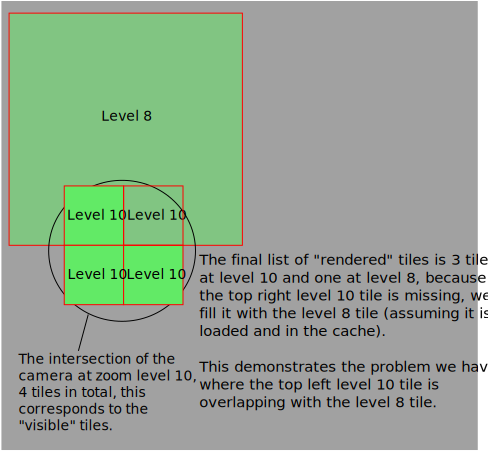
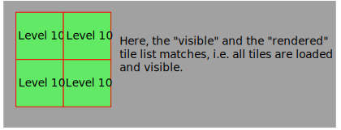
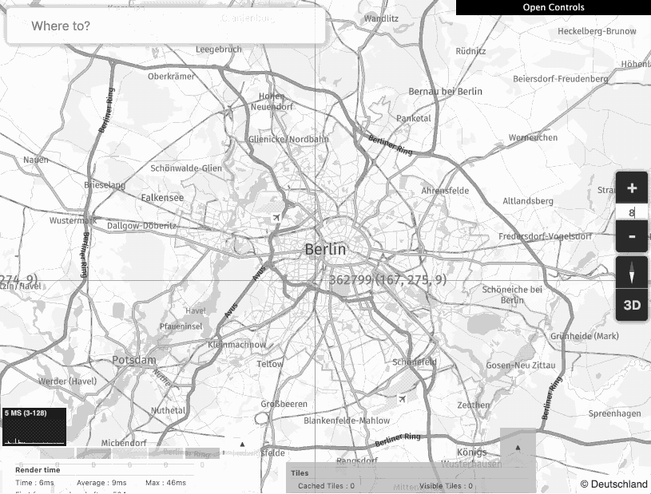
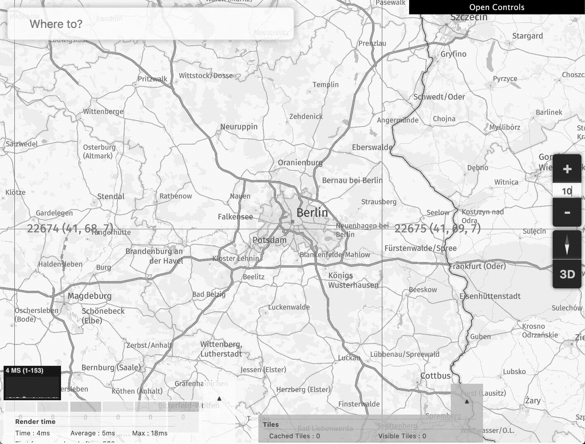
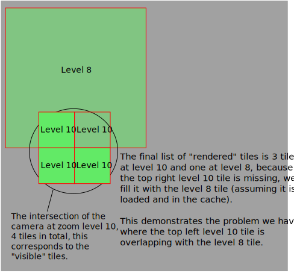
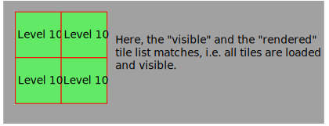

Fallback is a term used to describe the use of existing cached Tiles at a different storage level as a temporary replacement for Tiles that are still loading.
"A fallback plan or position can be used if other plans do not succeed or other things are not available"
Fallback is used whenever the camera moves / changes and the requested Tiles are not yet loaded. This can happen for example when panning, zooming, tilting, rotating etc, however the situations which show it the most vividly are when zooming in and out.
Note, sometimes there is a distinction between fallback and fallforward, in this case it just means which direction the Tiles are searched (fallback always means to search lower levels). However in general, the term fallback is intended to be used for both cases, because as described in the definition above it fits both cases.
When zooming out, we wait for the requested Tiles to load and show the visible descendent Tiles from the cache until the loaded Tiles are complete, here is an example jumping from zoom level 10 to 8.

Here is the same example slowed down:
The jump from zoom level 10 to 8 means that each tile at level 8 is composed of 16 tiles at level 10. This is easy to notice because the level 10 tiles showing Berlin are 1/4 the width and height.
When zooming in, we continue to show the tiles that were already visible until the tile is finished loading.

Here is the same example slowed down:
The problem however with this approach is that the tiles overlap each other, e.g. at level 10, each tile that is missing is filled with items in the cache, if there is a level 8 tile available, it is rendered, but this tile actually covers 16 level 10 tiles, so other neighbouring tiles that are already loaded and being rendered are overlaid on the lower zoom level tile. This has to be handled specially, see Implementation Details otherwise the difference in LOD causes issues especially for lines where the lower level tiles have a simplified line and therefore cause visible overlapping, here is a visual representation of how the tiles can overlap when the levels are different.

Note, this issue only shows when the tiles are loading, once all tiles are loaded, we no longer need to fallback, i.e. this is what the final result will be:

Image showing overlapping tiles and the issue it causes with roads and country borders overlapping.
The quadTreeSearchDistanceUp parameter simply means the maximum number of levels to go up to search for a replacement ancestor tile, and as can be guessed the quadTreeSearchDistanceDown parameter means how many levels to search for descendant tiles.
Note, there can be a performance penalty when using these functions, especially the quadTreeSearchDistanceDown parameter, because if there are many higher level tiles in the cache, they will all be shown, so there may be a stuttering in the frame rate until all Tiles are loaded.
Note, these values are consistent across all DataSources.
This is required for DataSources which produce transparent Tiles. Otherwise overlapping causes both transparent Tiles to overlap causing a momentary difference in color (because of the blending), this manifests itself as flickering and is very distracting.
There are 5 classes that are involved in the loading of Tiles, following is a brief summary of the 3 classes that may not be familiar (it is assumed that knowledge of MapView and DataSource exists).
The VisibleTileSet is responsible for managing the list of visible Tiles for the MapView, duties include caching, fallback, frustum culling, sorting by relavance etc.
The FrustumIntersection's responsibility is to compute the list of visible TileKeys based on the current camera's vantage point / view.
The DataSourceCache is an internal class which wraps a LRUCache and makes it easy to access also by DataSource
In order to understand the sequence diagram a bit better, please note the following:
The VisibleTileSet has two separate lists of Tiles, the visible Tile list which is the set of Tiles that we would like to render. I.e. it is the set of Tiles that are requested from the DataSources using the FrustumIntersections. The second list of Tiles is the rendered list. This includes the Tiles that are finally shown on the screen, each Tile in this list has geometry that is fully loaded. Note, the levels of the Tiles will differ, because some Tiles are not loaded and hence we fallback to either ancestors or descendents of the Tile.
The skipOverlappedTiles function is an optimization to not render the background plane when the DataSource produces Tiles that are fully covering, see DataSource.isFullyCovering. The background plane is required for the fallback, see implementation details or the JIRA ticket HARP-7856.
The VisibleTileSet populates an object with the DataSourceTileList interface, this includes the list of visible & rendered Tiles, the associated DataSource and some other properties.
The following list shows some of the details involved in the implementation of the fallback
Each Tile includes a hidden levelOffset, this is an integer which shows which level offset the tile has to the current MapView zoom level. A Tile that has a non zero levelOffset is a fallback tile. It is used to offset the render order correctly.
Each TileObject in each Tile needs to backup the render order, this is because during fallback, the objects renderOrder is adjusted based on what levelOffset it has, see how it is calculated here. We need to reset it when the Tile is rendered normally (i.e. it isn't a fallback helper).
The DataSource has a property addGroundPlane which dictates if the Tile needs geometry (i.e. a background opaque plane) to hide lower level Tiles from showing through and causing artifacts.
There are IBCT tests which are availabel internally in the @here/integration-tests repo, called OmvMapRender, the tests which check the fallback are called have fallbackStyle: true set, but this is unfortunately not public.
Fallback
Overview
Fallback is a term used to describe the use of existing cached Tiles at a different storage level as a temporary replacement for Tiles that are still loading.
According to the Cambridge dictionary "fallback" means:
Fallback is used whenever the camera moves / changes and the requested Tiles are not yet loaded. This can happen for example when panning, zooming, tilting, rotating etc, however the situations which show it the most vividly are when zooming in and out.
Note, sometimes there is a distinction between fallback and fallforward, in this case it just means which direction the Tiles are searched (fallback always means to search lower levels). However in general, the term fallback is intended to be used for both cases, because as described in the definition above it fits both cases.
Zooming out
When zooming out, we wait for the requested Tiles to load and show the visible descendent Tiles from the cache until the loaded Tiles are complete, here is an example jumping from zoom level 10 to 8.
Here is the same example slowed down:
The jump from zoom level 10 to 8 means that each tile at level 8 is composed of 16 tiles at level 10. This is easy to notice because the level 10 tiles showing Berlin are 1/4 the width and height.
Zooming in
When zooming in, we continue to show the tiles that were already visible until the tile is finished loading.
Here is the same example slowed down:
The problem however with this approach is that the tiles overlap each other, e.g. at level 10, each tile that is missing is filled with items in the cache, if there is a level 8 tile available, it is rendered, but this tile actually covers 16 level 10 tiles, so other neighbouring tiles that are already loaded and being rendered are overlaid on the lower zoom level tile. This has to be handled specially, see Implementation Details otherwise the difference in LOD causes issues especially for lines where the lower level tiles have a simplified line and therefore cause visible overlapping, here is a visual representation of how the tiles can overlap when the levels are different.
Note, this issue only shows when the tiles are loading, once all tiles are loaded, we no longer need to fallback, i.e. this is what the final result will be:
Image showing overlapping tiles and the issue it causes with roads and country borders overlapping.
How this is solved is described in the implementation details section.
API
There are two ways to configure the fallback logic
Configure search depth
There are two options which configure how far the search for tiles in the cache goes, these are quadTreeSearchDistanceUp and quadTreeSearchDistanceDown can be set as part of the MapViewOptions.
The quadTreeSearchDistanceUp parameter simply means the maximum number of levels to go up to search for a replacement ancestor tile, and as can be guessed the quadTreeSearchDistanceDown parameter means how many levels to search for descendant tiles.
Note, there can be a performance penalty when using these functions, especially the quadTreeSearchDistanceDown parameter, because if there are many higher level tiles in the cache, they will all be shown, so there may be a stuttering in the frame rate until all Tiles are loaded.
Note, these values are consistent across all DataSources.
Enable / Disable DataSource fallback
There is also the ability to disable this behaviour for a specific DataSource, see DataSourceOptions.allowOverlappingTiles.
This is required for DataSources which produce transparent Tiles. Otherwise overlapping causes both transparent Tiles to overlap causing a momentary difference in color (because of the blending), this manifests itself as flickering and is very distracting.
Sequence diagram
There are 5 classes that are involved in the loading of Tiles, following is a brief summary of the 3 classes that may not be familiar (it is assumed that knowledge of MapView and DataSource exists).
The VisibleTileSet is responsible for managing the list of visible Tiles for the MapView, duties include caching, fallback, frustum culling, sorting by relavance etc.
The FrustumIntersection's responsibility is to compute the list of visible TileKeys based on the current camera's vantage point / view.
The
DataSourceCacheis an internal class which wraps a LRUCache and makes it easy to access also by DataSourceIn order to understand the sequence diagram a bit better, please note the following:
- The VisibleTileSet has two separate lists of Tiles, the visible Tile list which is the set of Tiles that we would like to render. I.e. it is the set of Tiles that are requested from the DataSources using the FrustumIntersections. The second list of Tiles is the rendered list. This includes the Tiles that are finally shown on the screen, each Tile in this list has geometry that is fully loaded. Note, the levels of the Tiles will differ, because some Tiles are not loaded and hence we fallback to either ancestors or descendents of the Tile.
- The
- The VisibleTileSet populates an object with the
skipOverlappedTilesfunction is an optimization to not render the background plane when the DataSource produces Tiles that are fully covering, see DataSource.isFullyCovering. The background plane is required for the fallback, see implementation details or the JIRA ticket HARP-7856.DataSourceTileListinterface, this includes the list of visible & rendered Tiles, the associated DataSource and some other properties.Implementation details
The following list shows some of the details involved in the implementation of the fallback
Test cases
There are IBCT tests which are availabel internally in the @here/integration-tests repo, called
OmvMapRender, the tests which check the fallback are called havefallbackStyle: trueset, but this is unfortunately not public.